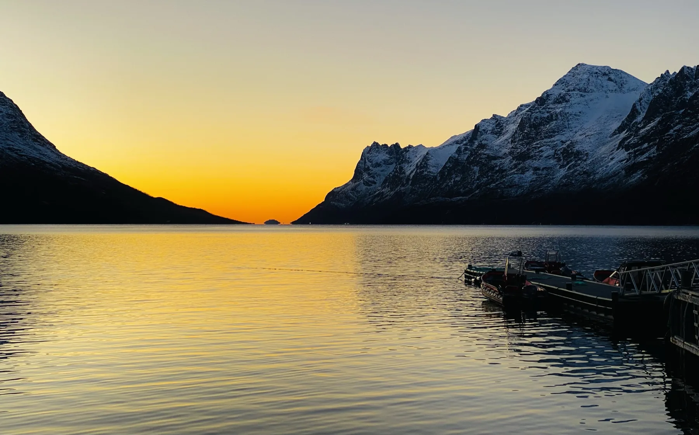
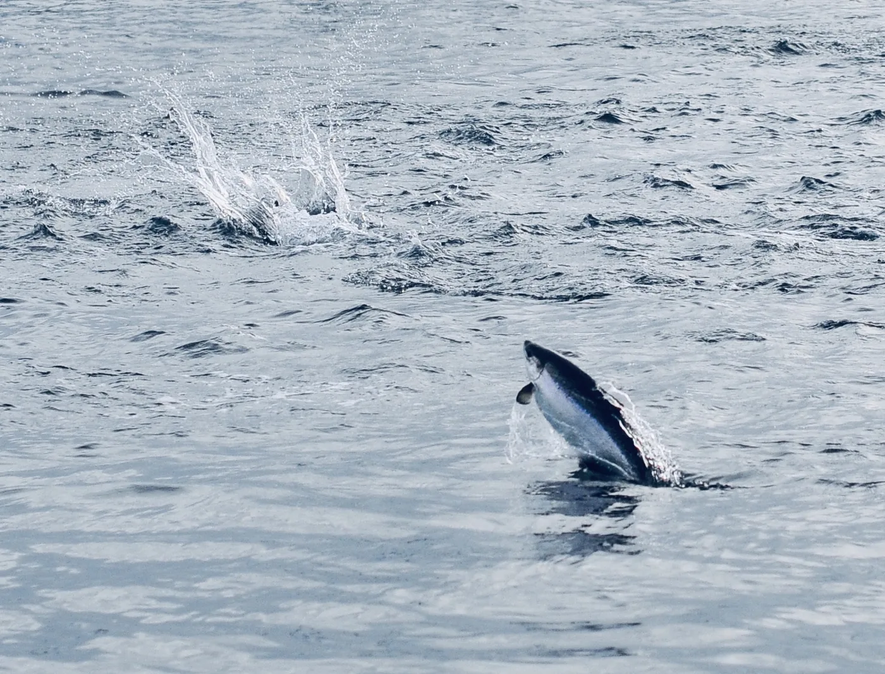
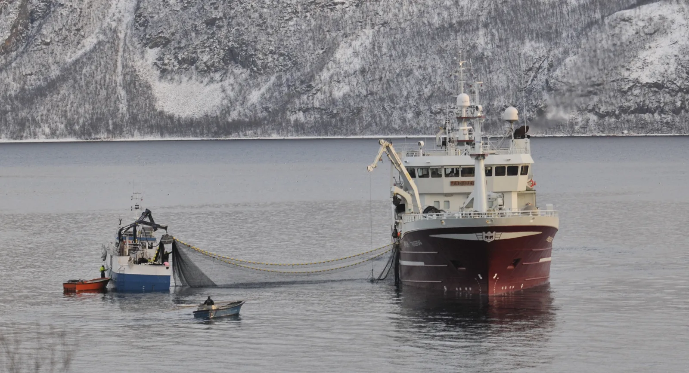
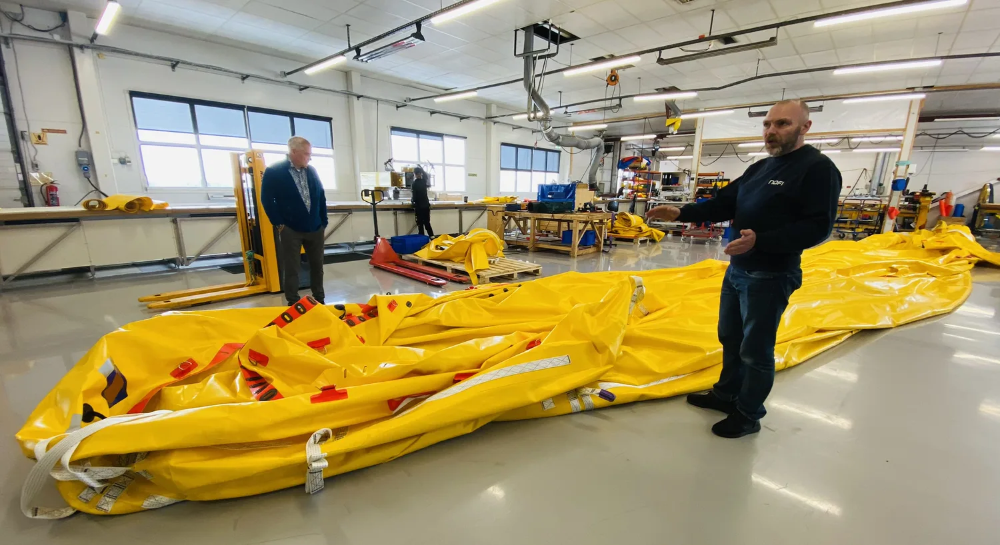
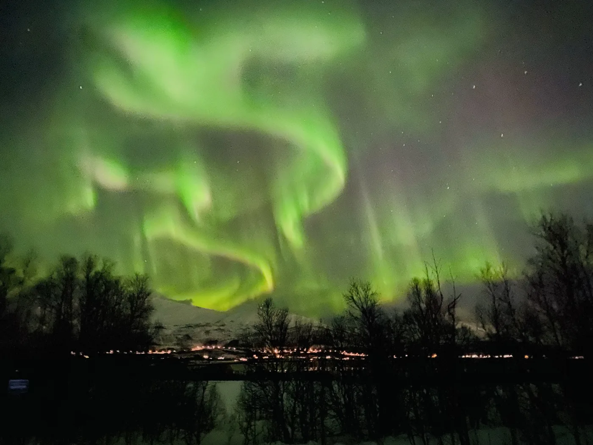
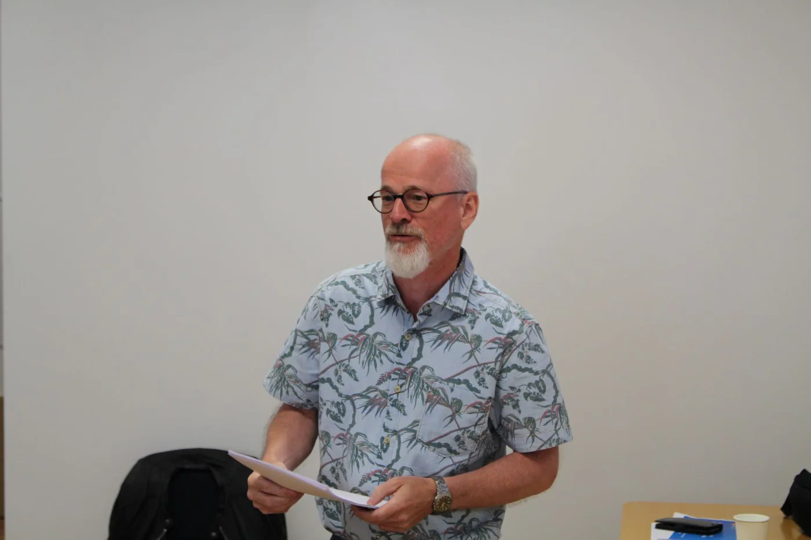
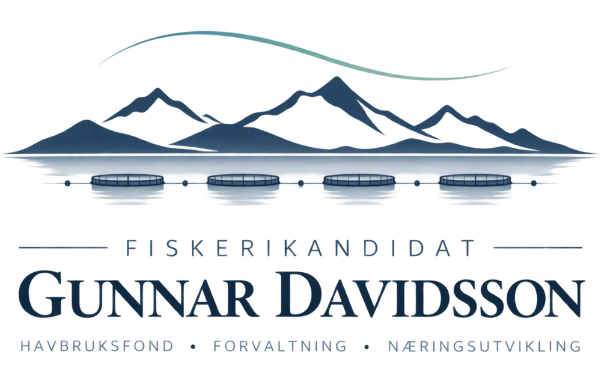

Areal og lokaliteter
Rådgivning i spørsmål knyttet til havbrukslokaliteter, arealbruk og kystsoneforvaltning.
Fiskeri · Forvaltning · Næringsutvikling
Gunnar Davidsson er utdannet fiskerikandidat fra Universitetet i Tromsø og har lang erfaring fra offentlig forvaltning, havbruk og regional næringsutvikling i Nord-Norge.

Faglig bakgrunn
Fiskerikandidat fra Universitetet i Tromsø, med erfaring fra fylkeskommunal næringsutvikling, havbrukslokaliteter og arealspørsmål.
Kompetanseområder
Rådgivning i spørsmål knyttet til havbrukslokaliteter, arealbruk og kystsoneforvaltning.
Bistand til virksomheter som trenger bedre oversikt over offentlige prosesser, ansvar og regelverk.
Faglige vurderinger, utredninger og innlegg basert på fiskerifaglig utdanning og lang erfaring fra næring og forvaltning.





Gunnar DavidssonOm Gunnar
Gunnar Davidsson er utdannet fiskerikandidat fra Universitetet i Tromsø og har lang erfaring fra fiskeri, havbruk, offentlig forvaltning og regional næringsutvikling.
Gjennom arbeidet i Troms fylkeskommune har han opparbeidet særlig kunnskap om havbrukslokaliteter, arealspørsmål og samspillet mellom næringsliv og offentlig forvaltning. Han har også deltatt aktivt i den offentlige debatten om rammevilkår og saksbehandling innen havbruksnæringen.
Gjennom enkeltpersonforetaket Fiskerikandidat Gunnar Davidsson tilbyr han rådgivning basert på denne faglige og praktiske erfaringen.

Utvalgte faglige omtaler
Gunnar har over tid bidratt med beregninger og faglige vurderinger av hvordan havbruksnæringen påvirker kommuner og lokalsamfunn langs kysten.
Gunnars beregninger viste at Flakstad, Vestvågøy og Vågan samlet kunne få om lag 35 millioner kroner. Han understreket samtidig usikkerheten i tallene og hvilke forutsetninger utbetalingen bygget på.
Les saken hos Vest-Lofoten NæringsforeningIntraFish presenterte estimater for utbetalinger til oppdrettskommuner langs kysten. Saken er illustrert med et av Gunnars egne fotografier fra havbruksnæringen i Nord-Troms.
Les saken hos IntraFishKontakt
En innledende samtale kan avklare behovet, rammene for oppdraget og om Gunnars kompetanse passer til saken.